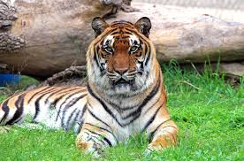

Tiger
Tigers are giant striped cats with soft, orange fur and white bellies. They’re strong swimmers who love water and live alone in forests. Each tiger’s stripe pattern is unique—like a fingerprint! Question: What makes every tiger’s stripes special?WHERE WILL YOU FIND THEM?
You will find the tigers at the Northern Frontier.